qqtest A self-calibrated quantile-quantile plot for assessing distributional shape.
Source: R/qqtest.R
qqtest.RdDraws a quantile-quantile plot for visually assessing whether the data come from a test distribution that has been defined in one of many ways.
The vertical axis plots the data quantiles, the horizontal those of a test distribution.
Interval estimates and exemplars provide different comparative information to assess the evidence provided by the qqplot against the hypothesis that the data come from the test distribution (default is normal or gaussian). Interval estimates provide test information related to individual quantiles, exemplars provide test information related to the shape of the quantile quantile curve.
Optionally, a visual test of significance (a lineup plot) can be displayed to provide a coarse level of significance for testing the null hypothesis that the data come from the test distribution.
The default behaviour generates 1000 samples from the test distribution and overlays the plot with pointwise interval estimates for the ordered quantiles from the test distribution.
Various option choices are available to effect different visualizations of the uncertainty surrounding the quantile quantile plot. These include overlaying independently generated exemplar test distribution sample quantile traces so as to assess the joint (as opposed to pointwise) distribution of quantiles.
See argument descriptions and examples for more details.
Usage
qqtest(
data,
dist = c("gaussian", "normal", "log-normal", "half-normal", "uniform", "exponential",
"chi-squared", "kay", "student", "t"),
df = 1,
qfunction = NULL,
rfunction = NULL,
dataTest = NULL,
p = NULL,
a = NULL,
np = NULL,
matchMethod = c("hinges", "quartiles", "middlehalf", "bottomhalf", "tophalf"),
xAxisAsProbs = FALSE,
yAxisAsProbs = FALSE,
xAxisProbs = c(0.05, 0.25, 0.5, 0.75, 0.95),
yAxisProbs = c(0.05, 0.25, 0.5, 0.75, 0.95),
nreps = 1000,
centralPercents = c(0.9, 0.95, 0.99),
envelope = TRUE,
drawPercentiles = FALSE,
drawQuartiles = FALSE,
legend = NULL,
legend.xy = "topleft",
legend.cex = 0.8,
nexemplars = 0,
typex = NULL,
plainTrails = FALSE,
colTrails = NULL,
alphaTrails = 0.25,
lwdTrails = 1,
lineup = FALSE,
nsuspects = 20,
col = NULL,
h = 260,
c = 90,
l = 60,
alpha = 1,
cex = NULL,
pch = 19,
type = NULL,
main = NULL,
xlab = NULL,
ylab = NULL,
xlim = NULL,
ylim = NULL,
axes = NULL,
bty = "o",
...
)Source
"Self calibrating quantile-quantile plots", R. Wayne Oldford, The American Statistician, 70, (2016) doi:10.1080/00031305.2015.1090338
"Unbiased Plotting Positions – A Review", C. Cunnane, Journal of Hydrology, Vol. 37 (1978), pp. 205-222.
Arguments
- data
A univariate dataset to be tested. If data has more than one column, the first is used.
- dist
The name of the distribution against which the comparison is made, the test distribution for a few built-in distributions. One of
"gaussian"(or"normal"),"log normal","half normal","uniform","exponential","student","chi-squared", or"kay". Only the first three characters of any of these is needed to specify the dist.If dist is
"student","chi-squared", or"kay", then a value for the degrees of freedom argument (dfbelow) is also required.- df
Degrees of freedom of
distto be used whendistis either"student"or"chi-squared".- qfunction
If non-
NULL, this must be a function of a single argument (a proportion, p say) which will be used to calculate the quantiles for the test distribution. If non-NULL, therfunctionshould also be non-NULL. The value of thedistargument will be ignored when this is the case.- rfunction
If non-
NULL, this must be a function of a single argument (a count, n say) which will be used to randomly select a sample of size n from the test distribution. If non-NULL, theqfunctionmust also be non-NULL. Ifqfunctionis non-NULLandrfunctionisNULL, thenqfunctionwill be applied to the output of a call torunifin place of theNULLrfunction(i.e. a probability integral transform is used to generate a random sample).The value of the
distargument will be ignored wheneverqfunctionis a function.- dataTest
If non-
NULL, this must be a second data set. The empirical distribution given by this data will be used as the test distribution against which the value of data will be tested. If non-NULL, the values of the argumentsdist,qfunction, andrfunctionwill all be ignored in favour of using this empirical distribution as the test distribution.- p
If non-
NULL, this must be a vector containing the probability points at which the quantiles are to be calculated. If the length of this vector is the same as that of the data, thenpis taken to be the probabilities that correspond to the data; otherwise the data are taken to provide and empirical quantile function values of which are taken atpto produce the plot.If
pisNULL(the default), thenpis determined by the functionppoints(n,a)wherenis the number of data points indataandais given by the argumentabelow.- a
This is the second parameter given to the
ppointscall to determinepas necessary. IfaisNULL, then default values are chosen for each specific distribution (e.g. 3/8 for gaussian, 0 for uniform, etc.) and as 2/5 otherwise, following the recommendations of C. Cunnane (1978). Users may supply their own value such as the original Hazen's 1/2 or Tukey's 1/3.- np
This is required if the vector
pis provided. Becausepcould take any values, we need to knownpthe sample size that was used to construct the quantiles at the provided vlauesp. Whenpandnpare provided all simulation is based on simulating values from the distribution of the order statisticsp*np.- matchMethod
It is necessary to match locations and scales of the two distributions. The method used to do this matching is given by
matchMethodwhich must be one ofc("hinges","quartiles", "middlehalf", "bottomhalf", "tophalf"). A line is fitted to the data and its coefficients used to adjust the location and scale of the test quantiles to match the data.If
matchMethod = "hinges"(the default), then the line is fit to(x, y)pairs given by the three central values offivenum()on each of the coordinates; if"quartiles"the three quartiles of each coordinate are paired and a line fit. The method"middlehalf", as the name suggests, fits a line to the middle half of the sorted data. In this way, it is very similar to the previous two methods. All three are fairly robust and use the central part of the data to estimate the location and scale based roughly on matching medians and inter-quartile spreads.The remaining two methods,
"bottomhalf"and"tophalf", use a line fitted to the bottom and top half of the sorted data. These are not generally recommended but might be used when the comparisondistis skewed. For example with a chi-squared distribution, one might usebottomhalfto match on data from the shorter left tail of the distribution. Similarly,"tophalf"might be preferred whendistis skewed in the opposite direction.Finally, note that the user may supply their own matching method by providing a function having vector arguments
xandyfor the horizontal and vertical quantiles which returns a vector of coefficients (intercept, slope) for the line to be used to match the quantile location and scales.- xAxisAsProbs
If
TRUE(the default is FALSE) the horizontal axis will be labelled as probabilities. These are the cumulative probabilities according to the test distribution. They are located at the corresponding quantile values. They are handy in comparing percentiles of the test and data distributions as well as giving some measure of the symmetry and tail weights of the test distribution by their location. IfFALSEthe axis is labelled according to the quantile values.- yAxisAsProbs
If
TRUE(the default is FALSE) the vertical axis will be labelled as probabilities. These are the cumulative probabilities according to the empirical distribution of thedata. They are located at the corresponding quantile values. They are handy in comparing percentiles of the test and data distributions as well as giving some measure of the symmetry and tail weights of thedatadistribution by their location. IfFALSEthe axis is labelled according to the quantile values.- xAxisProbs
A vector of probabilities to be used to label the x axis ticks when
xAxisAsProbsisTRUE. Default isc(0.05, 0.25, 0.50, 0.75, 0.95). Ignored ifxAxisAsProbsisFALSE.- yAxisProbs
A vector of probabilities to be used to label the y axis ticks when
yAxisAsProbsisTRUE. Default isc(0.05, 0.25, 0.50, 0.75, 0.95). Ignored ifyAxisAsProbsisFALSE.- nreps
The number of replicate samples to be taken from the test distribution to construct the pointwise intervals for each quantile. Default is 1000. From these samples, an empirical distribution is generated from the test distribution for the ordered quantiles corresponding to the values of
ppoints(length(data)). These are used to construct central intervals of whatever proportions are given bycentralPercents.- centralPercents
The vector of proportions determining the central intervals of the empirical distribution of each ordered quantile from the test distribution. Default is
c(0.90, 0.95, 0.99)corresponding to central 90, 95, and 99% simulated pointwise confidence intervals for each quantile coming from the test distribution for a sample the same size asdata. The quality of these interval locations typically increases withnrepsand decreases with the probability used for each interval.- envelope
If
TRUE(the default), a grey envelope is plotted showing the central intervals for each quantile as a shade of grey. The higher is the corresponding probability associated with the interval, the lighter is the shade. The outermost edges of the envelope are the range of the simulated data from the test distribution. The envelope thus provides a (pointwise) density estimate of the quantiles drawn from the test distribution for this sample size. IfFALSEno envelope is drawn.- drawPercentiles
If
TRUE, a pair of curves is plotted to show each of the central intervals as a different line type. These are plotted over the envelope ifenvelopeisTRUE. IfFALSE(the default) no simulated percentile curves are drawn.- drawQuartiles
If
TRUE, a pair of curves is plotted to show the quartiles (central 50% region) of the ordered quantiles simulated from the test distribution. The median of these is also plotted as a solid line type. These are plotted over the envelope ifenvelopeisTRUE. IfFALSE(the default) none of these curves are drawn.- legend
If
TRUE(the default isNULL) withnreps>0a legend for the appearance of the simulated ranges of the central intervals is added to the plot. IfFALSE, no legend appears. IfNULL, legend always appears except whenlineup = TRUE.- legend.xy
Either a string being one of
c("bottomright", "bottom", "bottomleft", "left", "topleft","top", "topright", "right", "center")(default is"topleft") or a list with named componentsxandyto be interpreted exactly as in the functionlegend()from thegraphicspackage.- legend.cex
Character expansion size for legend (default 0.8).
- nexemplars
(default is 0) The number of replicate samples to be taken from the test distribution and plotted as a coloured trail on the qqplot. Each such trail is a sample of the same size as
databut truly coming from the test distribution. Each trail gives some idea of what the shape of a qqplot would be for a sample of that size from the test distribution. Together, they give some sense of the variability in the plot's shape.- typex
(default is "o", or match
typeif supplied) Theplottype to be used in the plotting of the exemplars, legal values are the same as for thetypeargument ofplot.- plainTrails
If
TRUE, then a single grey colour is used for all exemplar trails. IfFALSE(the default), each exemplar trail is shown in a different colour.- colTrails
Colours to be used for the trails (default will be multi-colours).
- alphaTrails
The alpha transparency to be used in plotting all exemplar trails. The default is 0.25. Because the trails will overplot, a smaller
alphaTrailsvalue is recommended asnexemplarsincreases.- lwdTrails
The graphical line width (
lwd) to be used in plotting all exemplar trails. The default is 1. Because the trails will overplot, combining a largerlwdTrailswithenvelope = FALSE, a loweralphaTrailsvalue largernexemplarscan give a truer sense of the density of qqplot configurations than withenvelope = TRUE.- lineup
If
TRUE(default isFALSE) the qqplot ofdatais randomly located in a grid ofnsuspectsplots. Identical arguments are given to construct allqqtestplots in the grid. Assuming the viewer has not seen the qqplot of thisdatabefore, a successful selection of the truedataplot out of the grid of plots corresponds to evidence against the hypothesis that thedatacome from the test distribution. Significance level is 1/nsuspects. Similarly, if the viewer narrows the selection down to only k possible subjects AND the true location is among them, then the corresponding observed level of significance (p-value) would be k//nsuspects.Each plot is given a suspect number from 1 to
nsuspects(left to right, top to bottom). The suspect number of the plot corresponding to the actualdatais returned, slightly obfuscated to help keep the test honest.- nsuspects
The total number of plots (default is 20) to be viewed in the lineup display when
lineupislineup.- col
If non-
NULL,colmust be colour to be used for the points in the plot. IfNULL(the default), anhclcolour will be used from the values of the argumentsh,c,l, andalpha.- h
The hue of the colour of the points. Specified as an angle in degrees from 0 to 360 around a colour wheel. E.g. 0 is red, 120 green, 240 blue, Default is 260 (a bluish).
- c
The chroma of the colour of the points. Takes values from 0 to an upper bound that is a function of hue,
h, and luminance,l. Roughly, for fixedhandlthe higher the value ofcthe greater the intensity of colour.- l
The luminance of the colour of the points. Takes values from 0 to 100. For any given combination of hue,
h, and chroma,c, only a subset of this range will be possible. Roughly, for fixedhandcthe higher the value oflthe lighter is the colour.- alpha
The alpha transparency of the colour of the points. Takes values from 0 to 1. Values near 0 are more transparent, values near 1 (the default) are more opaque. Alpha values sum when points over plot, giving some indication of density.
- cex
The graphical parameter
cexfor the size of the points.- pch
The graphical parameter
pchfor the point character to be used for the points. Default is 19, a filled circle.- type
The graphical parameter
typefor the points of the qqplot. Default is "p".- main
The graphical parameter
mainproviding a title for the plot. IfNULL(the default), the title will be "qqtest" whenlineup = FALSEand "Suspect: " followed by the plot number whenlineup = TRUE. An empty string will suppress the title.- xlab
The graphical parameter
xlablabelling the x axis of the plot. IfNULL(the default), anxlabis created based on the information available from the other arguments toqqtestabout the test distribution. An empty string will suppress the labelling.- ylab
The graphical parameter
ylablabelling the y axis of the plot. IfNULL(the default), aylabis created based on the information available from the other arguments toqqtest. An empty string will suppress the labelling.- xlim
The graphical parameter
xlimdetermining the display limits of the x axis.- ylim
The graphical parameter
ylimdetermining the display limits of the y axis.- axes
The graphical parameter
axesdetermining whether axes are to be displayed (default isNULLwhich the same asTRUEexcept whenlineup=TRUE, thenaxesisFALSE).- bty
The graphical parameter
btydetermining the type of box to be used to enclose the plot (default is"o", setbty="n"for no box).- ...
Any further graphical parameters to be passed to the
plotfunction.
Value
Displays the qqplot.
Invisibly returns a list with named components x, y, and order giving the horizontal and
vertical locations of the points in sorted order, as well as the order vector from the input data. The result of qqtest must be assigned to get these.
The values could then, for example, be used to identify or label points in the display.
When lineup is TRUE, it returns a string encoding
the true location of the data as a calculation to be evaluated. This provides some simple obfuscation of the true
location so that the visual assessment can be honest. The true location is revealed by calling revealLocation()
on the returned value.
Examples
#
# default qqtest plot
qqtest(precip, main = "Precipitation (inches/year) in 70 US cities")
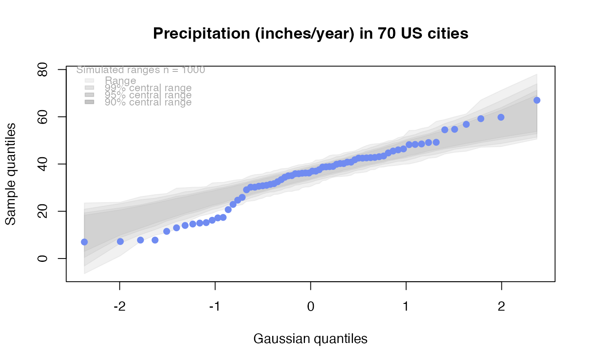
#
# qqtest to compare to qqnorm
op <- par(mfrow=c(1,2))
qqnorm(precip, main="qqnorm")
qqtest(precip, main="qqtest",
xAxisAsProbs=FALSE, yAxisAsProbs=FALSE)
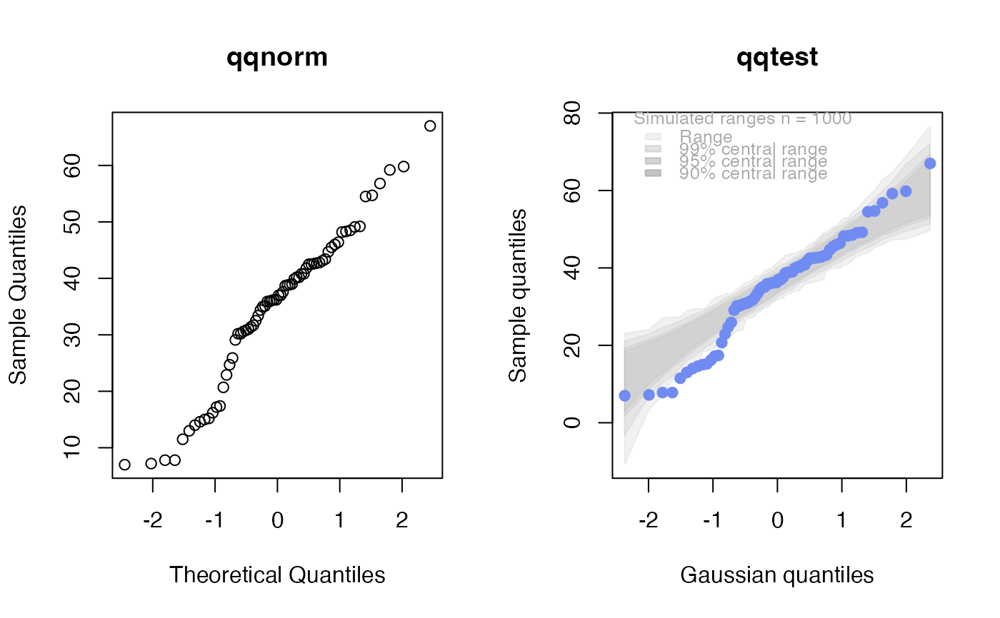
par(op)
#
# Use lines instead of envelope
qqtest(precip, envelope=FALSE, drawPercentiles=TRUE,
main = "Precipitation (inches/year) in 70 US cities")
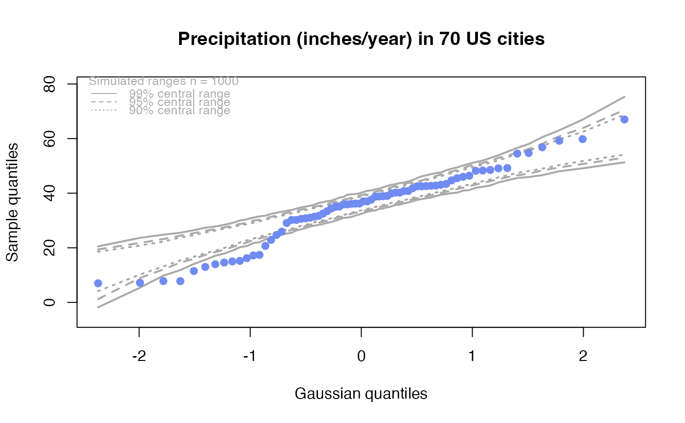
#
# Use quartiles instead of envelope
qqtest(precip, envelope=FALSE, drawQuartiles=TRUE,
main = "Precipitation (inches/year) in 70 US cities")
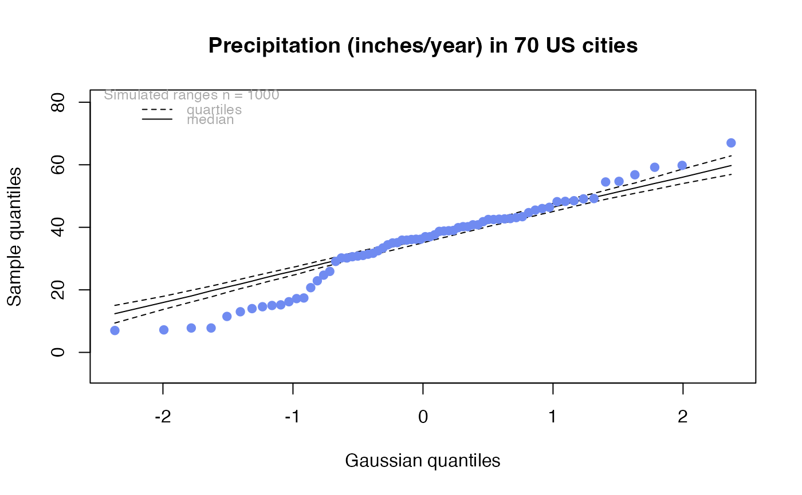
#
# Use coloured exemplars (qqplot of data simulated from the test distribution)
# and suppress the envelope. Where the envelope, percentiles, and quartiles are
# simulated pointwise bands, exemplars give some sense of what the (joint) shape of the
# quantile-quantile plot should look like (for data from the test distribution).
# Each simulated sample is a different colour.
qqtest(precip, nexemplars=10, typex="o", envelope=FALSE, type="p",
main = "Precipitation (inches/year) in 70 US cities")
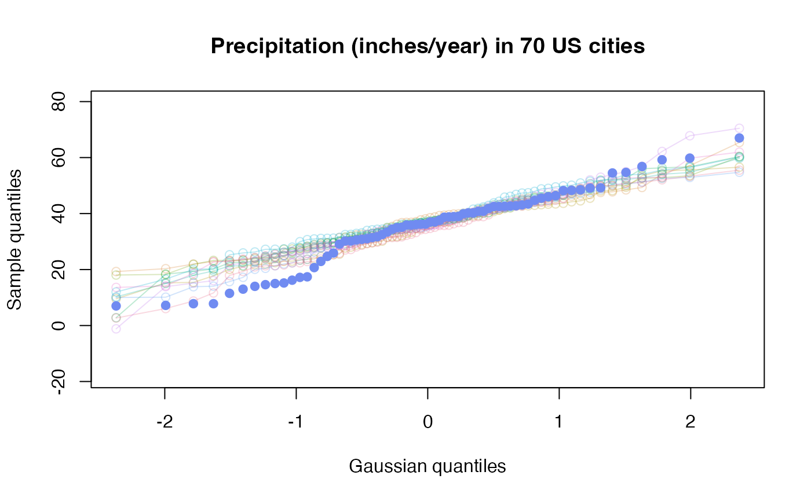
#
# Alternatively, the trail of each exemplar could be plain (the identical grey).
# Making each trail wide and assigning it some transparency (alpha near 0)
# allows the trails to give a sense of the density through the darkness of the grey.
#
qqtest(precip, nexemplars=20, envelope=FALSE,
lwdTrails=3, plainTrails=TRUE, alphaTrail=0.4, typex="o", type="o",
main = "Precipitation (inches/year) in 70 US cities")
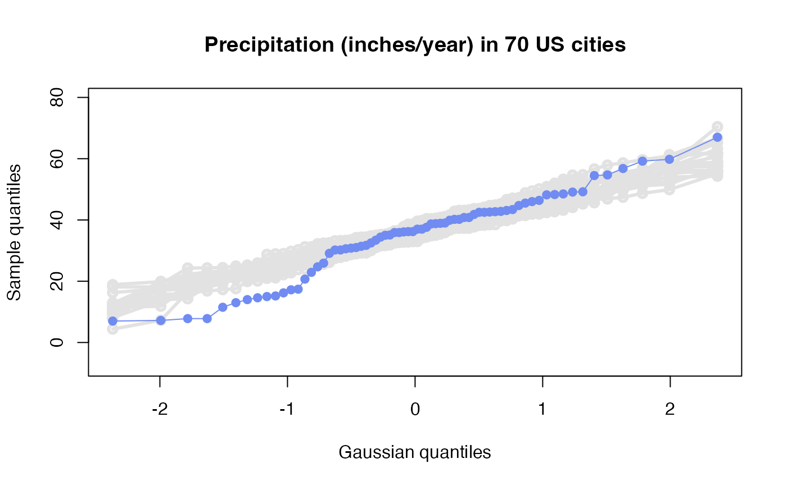
#
# Wide coloured exemplars with some transparency provide an indication of
# density and allow some trails to be followed by colour.
#
qqtest(precip, nexemplars=20, envelope=FALSE,
lwdTrails=3, alphaTrail=0.4, typex="o", type="o", col="black",
main = "Precipitation (inches/year) in 70 US cities")
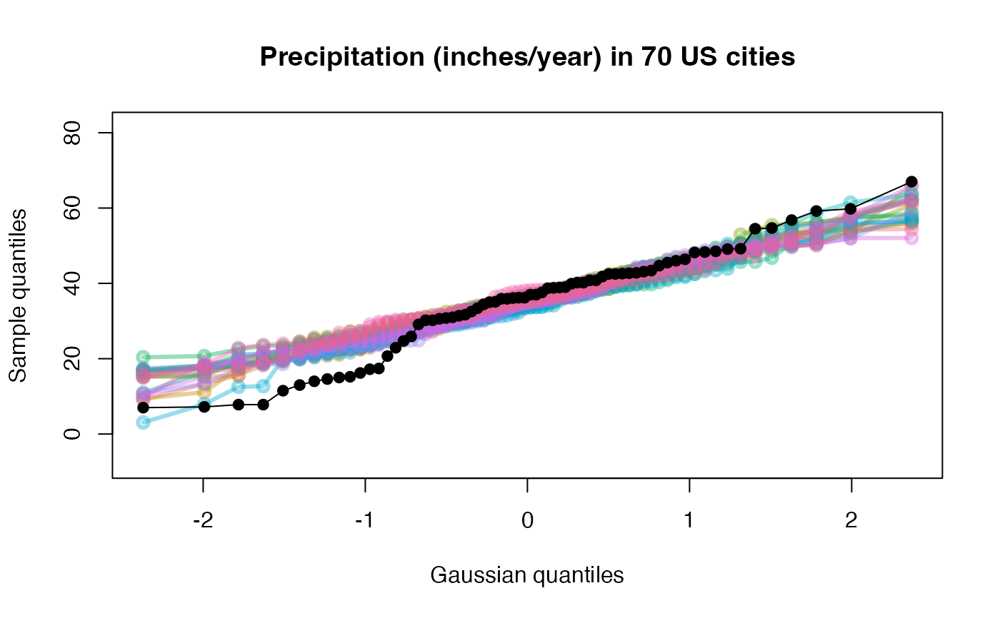
# Envelope and exemplars with coloured trails to be followed.
#
qqtest(precip, nexemplars=5,
lwdTrails=2, alphaTrail=0.6, alpha=0.8,
main = "Precipitation (inches/year) in 70 US cities")
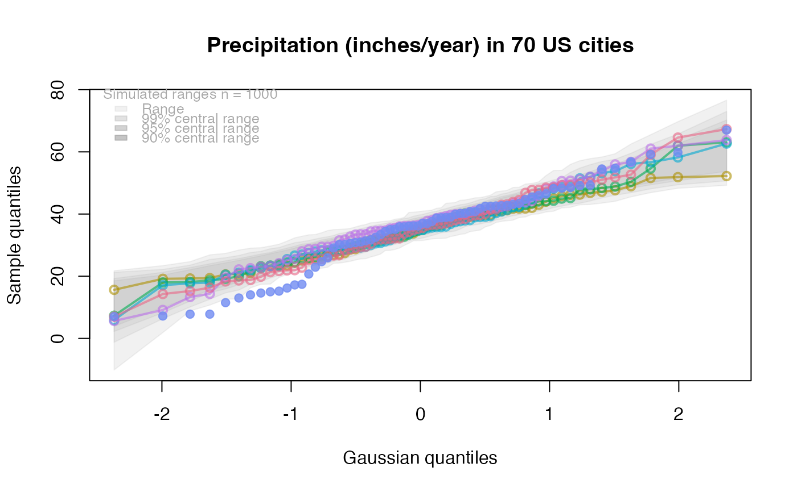
#
#
# gaussian - qqplot, but now showing in the line up
trueLoc <- qqtest(precip, lineup=TRUE, main="Suspect", legend=FALSE,
cex=0.75, col="grey20", ylab="", pch=21)
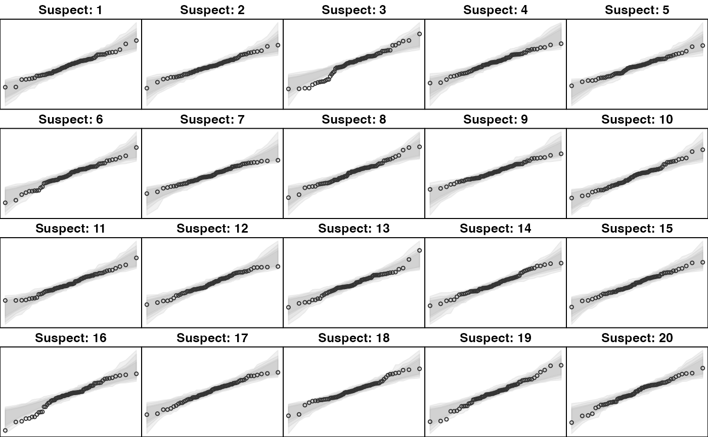
# the location of the real data in the line up can be found by evaluating
# the contents of the string
trueLoc
#> [1] "2^(log(471004401654115264, base=29) - 10.5)"
#
# Cut and paste the string contents into the R console, or simply
revealLocation(trueLoc)
#> [1] 3
#
#
# log-normal ... using the bacteria data from Whipple(1916)
data(bacteria, package="qqtest")
# Note that these are selected percentiles from a sample of 365 days in a year
with(bacteria,
qqtest(count, dist = "log-normal", p=percentTime/100, np=365, type="o",
yAxisAsProbs=FALSE, ylab="bacteria per cc",
xAxisProbs = c(0.01, 0.50,0.75, 0.90, 0.95, 0.99, 0.995),
xlab="Percentage of days in 1913",
main = "Number of bacteria from the Delaware river in 1913")
)
ptics <- c(0.01, 0.10, 0.25, 0.50, 0.75, 0.90, 0.99 )
axis(1,at=qnorm(ptics), labels=floor(ptics*100))
yvals <- c(100, 1000, 10000, 100000)
axis(2, at=log(yvals,10),
labels=c("100", "1,000", "10,000", "100,000"))
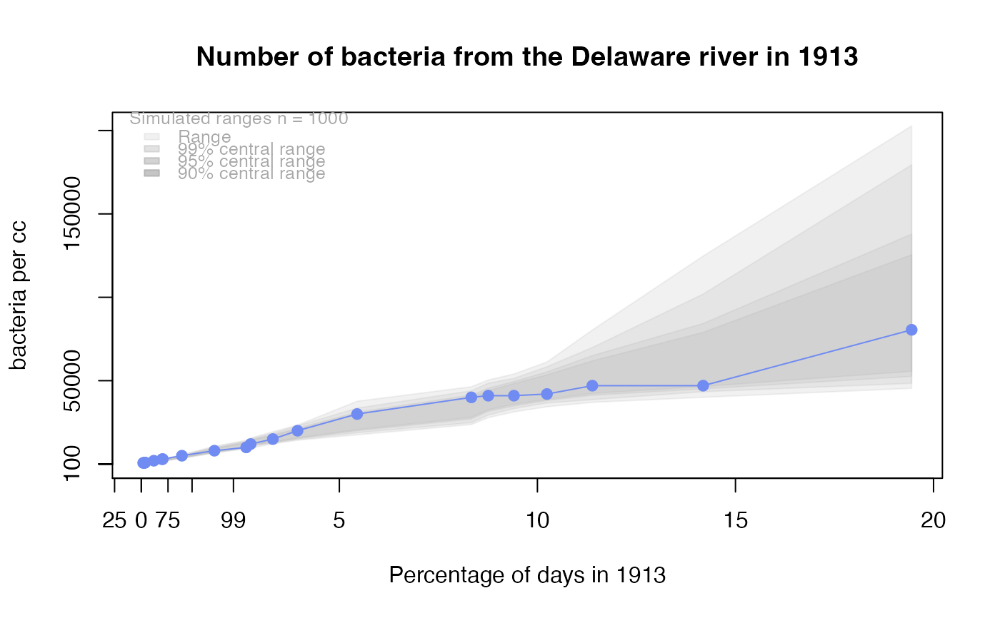
#
# compare this to the log-scaled normal qqplot
#
#
with(bacteria,
qqtest(log(count, 10), dist = "normal",
p=percentTime/100, np=365,
type="o", axes=FALSE,
ylab="bacteria per cc",
xlab="Proportion of days in 1913",
main = "Number of bacteria from the Delaware river in 1913")
)
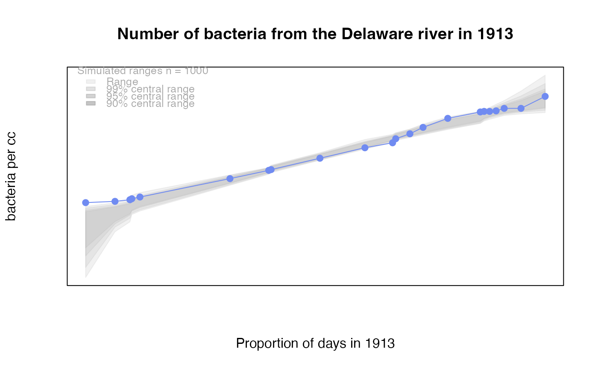
#
#
# Half normal ... using the penicillin data from Daniel(1959)
data(penicillin)
qqtest(penicillin, dist = "half-normal")
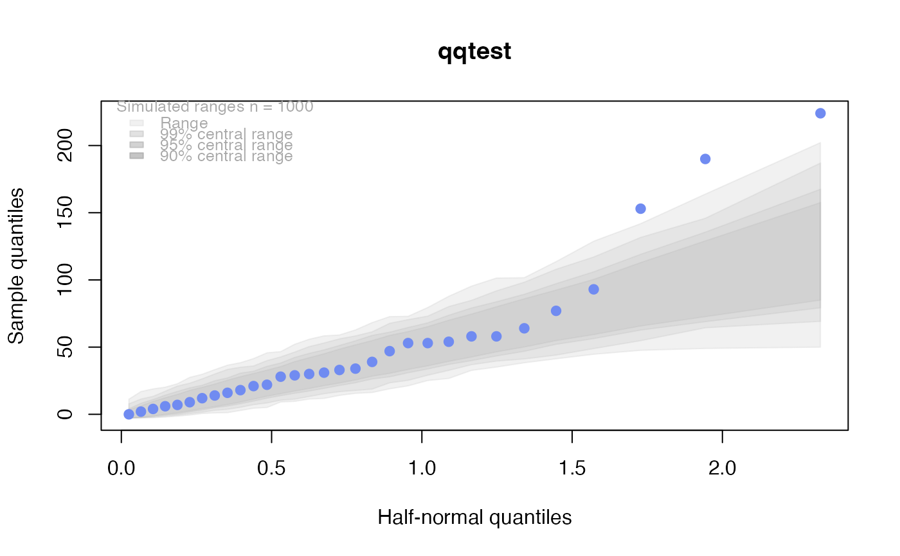
# Or the same again but with significant contrast labelled
with (penicillin,
{qqtest(value, yAxisProbs=c(0.1, 0.75, 0.90, 0.95),
dist="half-normal",
ylab="Sample cumulative probability",
xlab="Half-normal cumulative probability")
ppAdj <- (1+ppoints(31))/2 # to get half-normals from normal
x <- qnorm(ppAdj)
valOrder <- order(value) # need data and rownames in increasing order
y <- value[valOrder]
tags <- rownames(penicillin)[valOrder]
selPoints <- 28:31 # going to label only the largest effects
xoffset <- c(0.01, 0.02, 0.03, 0.075) # text function is a bit off
text(x[selPoints]-xoffset, y[selPoints],
tags[selPoints],
pos=2, cex=0.75)
}
)
# Alternatively, use the returned results for a lot less work
results <- qqtest(penicillin$value, yAxisProbs=c(0.1, 0.75, 0.90, 0.95),
dist="half-normal",
ylab="Sample cumulative probability",
xlab="Half-normal cumulative probability")
tags <- row.names(penicillin)[results$order]
selPoints <- 28:31 # going to label only the largest effects
xoffset <- c(0.01, 0.02, 0.03, 0.075) # text function is a bit off
text(results$x[selPoints]-xoffset, results$y[selPoints],
tags[selPoints],
pos=2, cex=0.75)
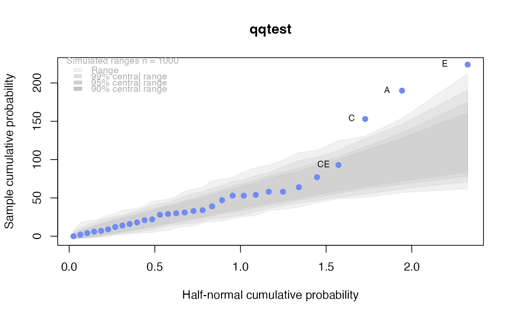
# or the same points could have been identified interactively vusing
# identify(results$x, results$y, labels = row.names(penicillin)[results$order])
#
# K on 9 df ... see help(dkay)
# Use data on primer paint thickness (standard deviations on n=10)
data(primer, package="qqtest")
with (primer,
qqtest(s, dist="kay", df=9,
yAxisAsProbs=FALSE,
ylab="Standard deviation of primer thickness (in mils)")
)
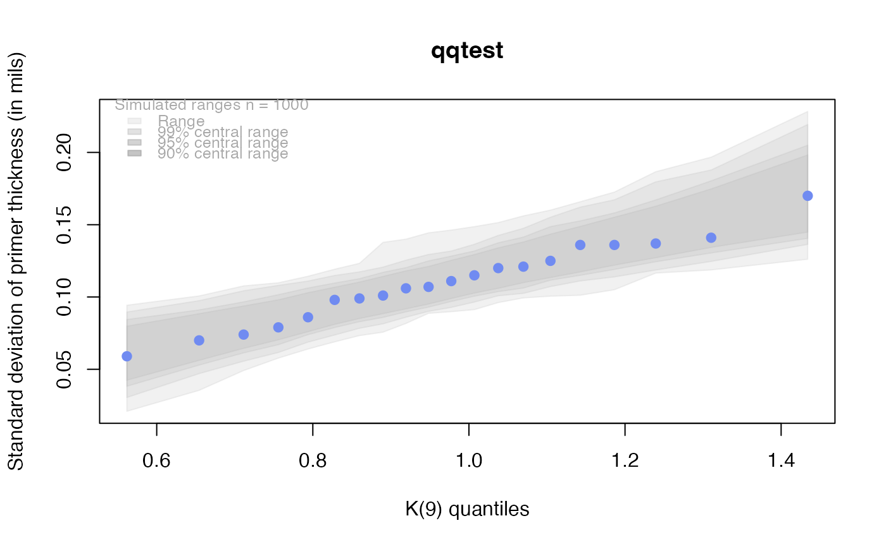
#
# chi-squared on 3 df
# Use robust covariance matrix in calculation Mahalanobis distances
# for the classical Brownlee stackloss data.
data(stacklossDistances, package="qqtest")
with(stacklossDistances,
qqtest(robust, dist="chi", df=3, ylab="Robust Mahalanobis distances"))
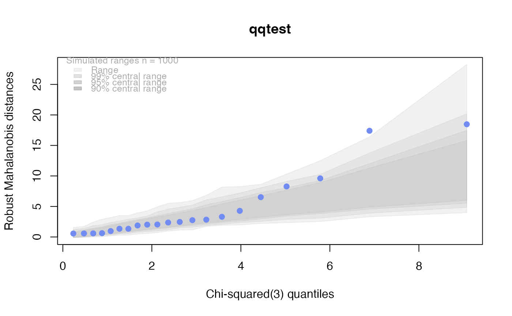
#
#
# user supplied qfunction and rfunction -- compare to beta distribution
qqtest(precip,
qfunction=function(p){qbeta(p, 2, 2)},
rfunction=function(n){rbeta(n, 2, 2)},
main = "Precipitation (inches/year) in 70 US cities")
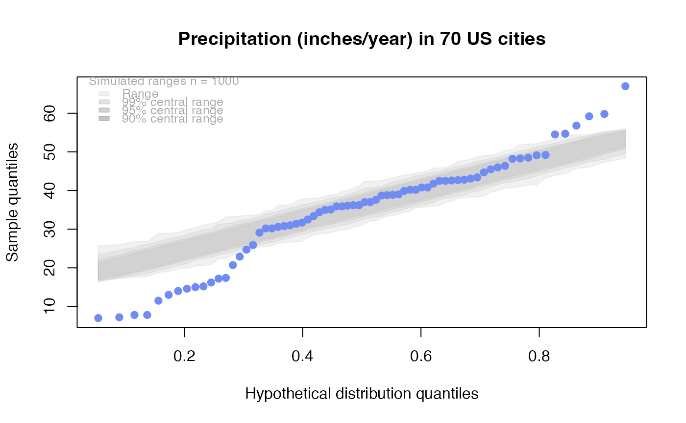
#
#
# user supplied qfunction only -- compare to beta distribution
qqtest(precip,
qfunction=function(p){qbeta(p, 2, 2)},
main = "Precipitation (inches/year) in 70 US cities")
#
# comparing data samples
#
# Does the sample of beaver2's temperatures look like they
# could have come from a distribution shaped like beaver1's?
#
qqtest(beaver2[,"temp"],
dataTest=beaver1[,"temp"],
ylab="Beaver 2", xlab="Beaver 1",
main="Beaver body temperatures")
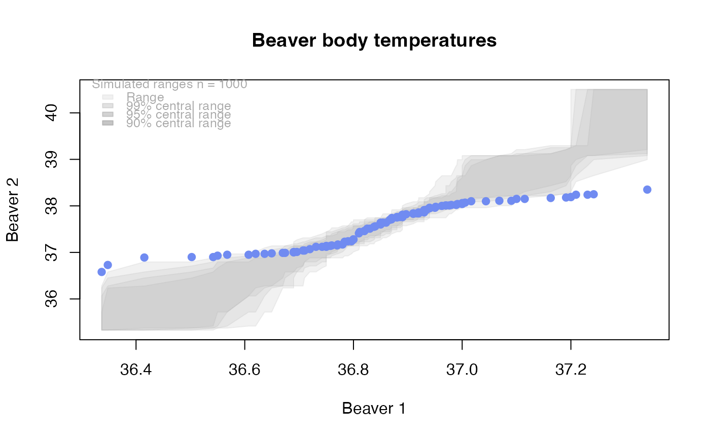